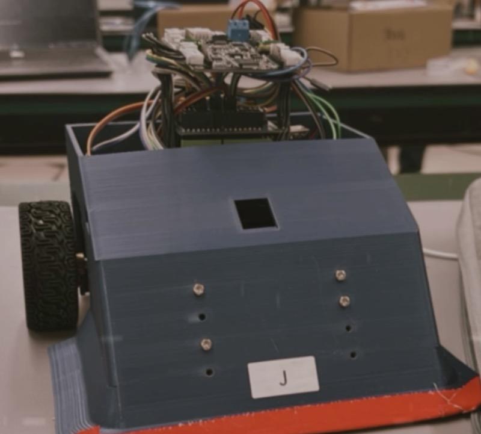
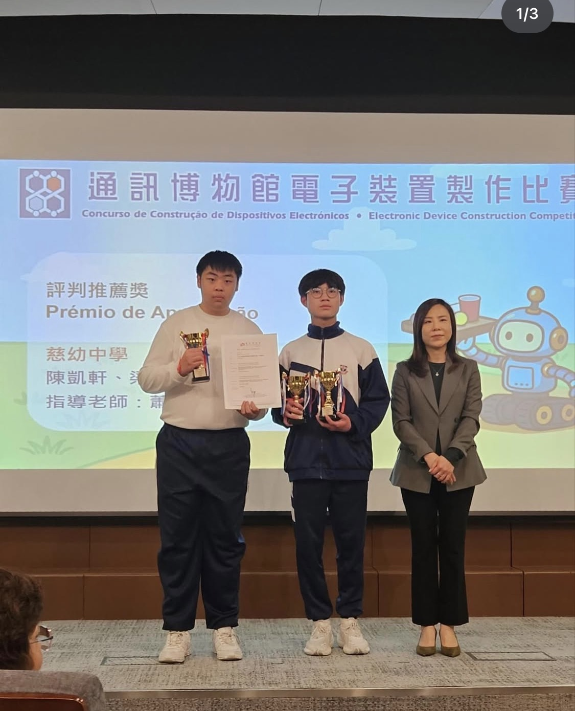

Engineering Portfolio · 2026
Engineering Track Student at Instituto Salesiano, Macau — focused on practical prototyping, embedded systems, and engineering problem-solving.
01 · Profile
I am a senior student specializing in the engineering track at Instituto Salesiano in Macau. Shaped by our school's specialized Design & Applied Technology (DAT) curriculum, I have concentrated on practical engineering prototyping and technical documentation since Senior 1. I focus on connecting theoretical science and calculus with hardware-software integration to solve actual functional challenges. My aspiration is to major in Engineering at National Taiwan Ocean University, where I hope to build upon my foundation in automation and sensor networks to address modern infrastructure and community problems.
02 · Capability
03 · Selected Work
Designed and built an autonomous sumo robot structured to clear a ring using a 7-sensor infrared (IR) array for line detection and target tracking. During development, a structural alignment issue occurred where the L-shaped motor casing conflicted physically with the battery compartment. I resolved this constraint by manually modifying the internal chassis layout. When a component failure occurred during the matches, I applied immediate structural reinforcements to maintain baseline stability, securing 4th place school-wide.
View Technical Report (PDF)
Collaborated on a 20-page comprehensive technical project proposal for a drop-deployable spherical reconnaissance vehicle designed for disaster response zones. The project focuses on a Vision-Space Synchronous Anchoring layout to run telemetry over an ESP32 computing framework. My primary responsibility involved researching the utilization of Beidou's satellite short-message communication protocols to reliably send absolute coordinates and gas detector logs under complete network blackouts.
View Project Proposal (PDF)2026 Balance & Sorting Automation: Developed an S-Curve acceleration motor profiling routine to prevent load displacement during movement across flat surfaces under time constraints. Integrated a multi-axis servo arm with coordinate tracking to secure a Judges' Commendation Award (評判推薦獎) out of 90 competing teams.
View Official Competition Information
Urban Safety Survey & Advocacy (Seng I Building): Participated in a joint-school geography survey assessing environmental risks in high-density residential sectors of Macau's Northern District. During the field assessment of the Seng I building (勝意樓), our team documented extensive structural concrete spalling, a non-functional communal corridor lighting network, and fire escape paths obstructed by debris. We compiled these findings into an empirical summary advocating for accelerated local urban renewal and safety intervention.
DAT Society & Greater Bay Area Inspection: Active member of the school's Design & Applied Technology Society. Participated in the Dongguan modern industrial tour organized by the Macau Engineering Association, tracking automated assembly frameworks to understand practical manufacturing constraints.
Chado (Tea Ceremony) Practice & Critical Research: The discipline involved in Chado has served as a practical method for maintaining concentration and strict sequential awareness during hardware testing and complex code debugging. This is paired with classical historical document analysis coursework to strengthen objective literature synthesis and multi-variable critical reasoning.